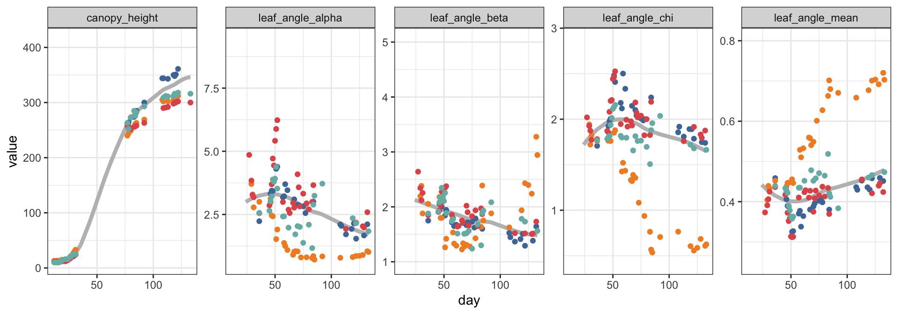

Exploration
Ryan Hafen
2019-10-28
Last updated: 2019-11-05
Checks: 6 1
Knit directory: terra/
This reproducible R Markdown analysis was created with workflowr (version 1.4.0). The Checks tab describes the reproducibility checks that were applied when the results were created. The Past versions tab lists the development history.
The R Markdown file has unstaged changes. To know which version of the R Markdown file created these results, you’ll want to first commit it to the Git repo. If you’re still working on the analysis, you can ignore this warning. When you’re finished, you can run wflow_publish to commit the R Markdown file and build the HTML.
Great job! The global environment was empty. Objects defined in the global environment can affect the analysis in your R Markdown file in unknown ways. For reproduciblity it’s best to always run the code in an empty environment.
The command set.seed(20191026) was run prior to running the code in the R Markdown file. Setting a seed ensures that any results that rely on randomness, e.g. subsampling or permutations, are reproducible.
Great job! Recording the operating system, R version, and package versions is critical for reproducibility.
Nice! There were no cached chunks for this analysis, so you can be confident that you successfully produced the results during this run.
Great job! Using relative paths to the files within your workflowr project makes it easier to run your code on other machines.
Great! You are using Git for version control. Tracking code development and connecting the code version to the results is critical for reproducibility. The version displayed above was the version of the Git repository at the time these results were generated.
Note that you need to be careful to ensure that all relevant files for the analysis have been committed to Git prior to generating the results (you can use wflow_publish or wflow_git_commit). workflowr only checks the R Markdown file, but you know if there are other scripts or data files that it depends on. Below is the status of the Git repository when the results were generated:
Ignored files:
Ignored: .DS_Store
Ignored: analysis/.DS_Store
Ignored: data/.DS_Store
Ignored: docs/.DS_Store
Ignored: docs/trelliscope/.DS_Store
Ignored: docs/trelliscope/lib/.DS_Store
Untracked files:
Untracked: data/raw/
Unstaged changes:
Modified: analysis/exploration.Rmd
Staged changes:
New: docs/trelliscope/appfiles/displays/common/grid_location_by_cultivar/cogData.jsonp
New: docs/trelliscope/appfiles/displays/common/grid_location_by_cultivar/displayObj.jsonp
New: docs/trelliscope/appfiles/displays/common/grid_location_by_cultivar/jsonp/MISSING.jsonp
New: docs/trelliscope/appfiles/displays/common/grid_location_by_cultivar/jsonp/PI145619.jsonp
New: docs/trelliscope/appfiles/displays/common/grid_location_by_cultivar/jsonp/PI145626.jsonp
New: docs/trelliscope/appfiles/displays/common/grid_location_by_cultivar/jsonp/PI145633.jsonp
New: docs/trelliscope/appfiles/displays/common/grid_location_by_cultivar/jsonp/PI146890.jsonp
New: docs/trelliscope/appfiles/displays/common/grid_location_by_cultivar/jsonp/PI152651.jsonp
New: docs/trelliscope/appfiles/displays/common/grid_location_by_cultivar/jsonp/PI152694.jsonp
New: docs/trelliscope/appfiles/displays/common/grid_location_by_cultivar/jsonp/PI152727.jsonp
New: docs/trelliscope/appfiles/displays/common/grid_location_by_cultivar/jsonp/PI152728.jsonp
New: docs/trelliscope/appfiles/displays/common/grid_location_by_cultivar/jsonp/PI152730.jsonp
New: docs/trelliscope/appfiles/displays/common/grid_location_by_cultivar/jsonp/PI152733.jsonp
New: docs/trelliscope/appfiles/displays/common/grid_location_by_cultivar/jsonp/PI152751.jsonp
New: docs/trelliscope/appfiles/displays/common/grid_location_by_cultivar/jsonp/PI152771.jsonp
New: docs/trelliscope/appfiles/displays/common/grid_location_by_cultivar/jsonp/PI152816.jsonp
New: docs/trelliscope/appfiles/displays/common/grid_location_by_cultivar/jsonp/PI152923.jsonp
New: docs/trelliscope/appfiles/displays/common/grid_location_by_cultivar/jsonp/PI152961.jsonp
New: docs/trelliscope/appfiles/displays/common/grid_location_by_cultivar/jsonp/PI152971.jsonp
New: docs/trelliscope/appfiles/displays/common/grid_location_by_cultivar/jsonp/PI153877.jsonp
New: docs/trelliscope/appfiles/displays/common/grid_location_by_cultivar/jsonp/PI154844.jsonp
New: docs/trelliscope/appfiles/displays/common/grid_location_by_cultivar/jsonp/PI154846.jsonp
New: docs/trelliscope/appfiles/displays/common/grid_location_by_cultivar/jsonp/PI154944.jsonp
New: docs/trelliscope/appfiles/displays/common/grid_location_by_cultivar/jsonp/PI154987.jsonp
New: docs/trelliscope/appfiles/displays/common/grid_location_by_cultivar/jsonp/PI154988.jsonp
New: docs/trelliscope/appfiles/displays/common/grid_location_by_cultivar/jsonp/PI155516.jsonp
New: docs/trelliscope/appfiles/displays/common/grid_location_by_cultivar/jsonp/PI155760.jsonp
New: docs/trelliscope/appfiles/displays/common/grid_location_by_cultivar/jsonp/PI155885.jsonp
New: docs/trelliscope/appfiles/displays/common/grid_location_by_cultivar/jsonp/PI156178.jsonp
New: docs/trelliscope/appfiles/displays/common/grid_location_by_cultivar/jsonp/PI156217.jsonp
New: docs/trelliscope/appfiles/displays/common/grid_location_by_cultivar/jsonp/PI156268.jsonp
New: docs/trelliscope/appfiles/displays/common/grid_location_by_cultivar/jsonp/PI156326.jsonp
New: docs/trelliscope/appfiles/displays/common/grid_location_by_cultivar/jsonp/PI156487.jsonp
New: docs/trelliscope/appfiles/displays/common/grid_location_by_cultivar/jsonp/PI156890.jsonp
New: docs/trelliscope/appfiles/displays/common/grid_location_by_cultivar/jsonp/PI157030.jsonp
New: docs/trelliscope/appfiles/displays/common/grid_location_by_cultivar/jsonp/PI157035.jsonp
New: docs/trelliscope/appfiles/displays/common/grid_location_by_cultivar/jsonp/PI157804.jsonp
New: docs/trelliscope/appfiles/displays/common/grid_location_by_cultivar/jsonp/PI170787.jsonp
New: docs/trelliscope/appfiles/displays/common/grid_location_by_cultivar/jsonp/PI175919.jsonp
New: docs/trelliscope/appfiles/displays/common/grid_location_by_cultivar/jsonp/PI176766.jsonp
New: docs/trelliscope/appfiles/displays/common/grid_location_by_cultivar/jsonp/PI179749.jsonp
New: docs/trelliscope/appfiles/displays/common/grid_location_by_cultivar/jsonp/PI180348.jsonp
New: docs/trelliscope/appfiles/displays/common/grid_location_by_cultivar/jsonp/PI181080.jsonp
New: docs/trelliscope/appfiles/displays/common/grid_location_by_cultivar/jsonp/PI181083.jsonp
New: docs/trelliscope/appfiles/displays/common/grid_location_by_cultivar/jsonp/PI195754.jsonp
New: docs/trelliscope/appfiles/displays/common/grid_location_by_cultivar/jsonp/PI196583.jsonp
New: docs/trelliscope/appfiles/displays/common/grid_location_by_cultivar/jsonp/PI196586.jsonp
New: docs/trelliscope/appfiles/displays/common/grid_location_by_cultivar/jsonp/PI196598.jsonp
New: docs/trelliscope/appfiles/displays/common/grid_location_by_cultivar/jsonp/PI19770.jsonp
New: docs/trelliscope/appfiles/displays/common/grid_location_by_cultivar/jsonp/PI213900.jsonp
New: docs/trelliscope/appfiles/displays/common/grid_location_by_cultivar/jsonp/PI217691.jsonp
New: docs/trelliscope/appfiles/displays/common/grid_location_by_cultivar/jsonp/PI221548.jsonp
New: docs/trelliscope/appfiles/displays/common/grid_location_by_cultivar/jsonp/PI221651.jsonp
New: docs/trelliscope/appfiles/displays/common/grid_location_by_cultivar/jsonp/PI22913.jsonp
New: docs/trelliscope/appfiles/displays/common/grid_location_by_cultivar/jsonp/PI251672.jsonp
New: docs/trelliscope/appfiles/displays/common/grid_location_by_cultivar/jsonp/PI253986.jsonp
New: docs/trelliscope/appfiles/displays/common/grid_location_by_cultivar/jsonp/PI255744.jsonp
New: docs/trelliscope/appfiles/displays/common/grid_location_by_cultivar/jsonp/PI257599.jsonp
New: docs/trelliscope/appfiles/displays/common/grid_location_by_cultivar/jsonp/PI257600.jsonp
New: docs/trelliscope/appfiles/displays/common/grid_location_by_cultivar/jsonp/PI267573.jsonp
New: docs/trelliscope/appfiles/displays/common/grid_location_by_cultivar/jsonp/PI276837.jsonp
New: docs/trelliscope/appfiles/displays/common/grid_location_by_cultivar/jsonp/PI297155.jsonp
New: docs/trelliscope/appfiles/displays/common/grid_location_by_cultivar/jsonp/PI297171.jsonp
New: docs/trelliscope/appfiles/displays/common/grid_location_by_cultivar/jsonp/PI302252.jsonp
New: docs/trelliscope/appfiles/displays/common/grid_location_by_cultivar/jsonp/PI303658.jsonp
New: docs/trelliscope/appfiles/displays/common/grid_location_by_cultivar/jsonp/PI329286.jsonp
New: docs/trelliscope/appfiles/displays/common/grid_location_by_cultivar/jsonp/PI329299.jsonp
New: docs/trelliscope/appfiles/displays/common/grid_location_by_cultivar/jsonp/PI329300.jsonp
New: docs/trelliscope/appfiles/displays/common/grid_location_by_cultivar/jsonp/PI329310.jsonp
New: docs/trelliscope/appfiles/displays/common/grid_location_by_cultivar/jsonp/PI329319.jsonp
New: docs/trelliscope/appfiles/displays/common/grid_location_by_cultivar/jsonp/PI329326.jsonp
New: docs/trelliscope/appfiles/displays/common/grid_location_by_cultivar/jsonp/PI329333.jsonp
New: docs/trelliscope/appfiles/displays/common/grid_location_by_cultivar/jsonp/PI329338.jsonp
New: docs/trelliscope/appfiles/displays/common/grid_location_by_cultivar/jsonp/PI329351.jsonp
New: docs/trelliscope/appfiles/displays/common/grid_location_by_cultivar/jsonp/PI329394.jsonp
New: docs/trelliscope/appfiles/displays/common/grid_location_by_cultivar/jsonp/PI329403.jsonp
New: docs/trelliscope/appfiles/displays/common/grid_location_by_cultivar/jsonp/PI329465.jsonp
New: docs/trelliscope/appfiles/displays/common/grid_location_by_cultivar/jsonp/PI329471.jsonp
New: docs/trelliscope/appfiles/displays/common/grid_location_by_cultivar/jsonp/PI329473.jsonp
New: docs/trelliscope/appfiles/displays/common/grid_location_by_cultivar/jsonp/PI329478.jsonp
New: docs/trelliscope/appfiles/displays/common/grid_location_by_cultivar/jsonp/PI329480.jsonp
New: docs/trelliscope/appfiles/displays/common/grid_location_by_cultivar/jsonp/PI329506.jsonp
New: docs/trelliscope/appfiles/displays/common/grid_location_by_cultivar/jsonp/PI329511.jsonp
New: docs/trelliscope/appfiles/displays/common/grid_location_by_cultivar/jsonp/PI329517.jsonp
New: docs/trelliscope/appfiles/displays/common/grid_location_by_cultivar/jsonp/PI329518.jsonp
New: docs/trelliscope/appfiles/displays/common/grid_location_by_cultivar/jsonp/PI329519.jsonp
New: docs/trelliscope/appfiles/displays/common/grid_location_by_cultivar/jsonp/PI329541.jsonp
New: docs/trelliscope/appfiles/displays/common/grid_location_by_cultivar/jsonp/PI329545.jsonp
New: docs/trelliscope/appfiles/displays/common/grid_location_by_cultivar/jsonp/PI329546.jsonp
New: docs/trelliscope/appfiles/displays/common/grid_location_by_cultivar/jsonp/PI329550.jsonp
New: docs/trelliscope/appfiles/displays/common/grid_location_by_cultivar/jsonp/PI329569.jsonp
New: docs/trelliscope/appfiles/displays/common/grid_location_by_cultivar/jsonp/PI329570.jsonp
New: docs/trelliscope/appfiles/displays/common/grid_location_by_cultivar/jsonp/PI329584.jsonp
New: docs/trelliscope/appfiles/displays/common/grid_location_by_cultivar/jsonp/PI329585.jsonp
New: docs/trelliscope/appfiles/displays/common/grid_location_by_cultivar/jsonp/PI329605.jsonp
New: docs/trelliscope/appfiles/displays/common/grid_location_by_cultivar/jsonp/PI329614.jsonp
New: docs/trelliscope/appfiles/displays/common/grid_location_by_cultivar/jsonp/PI329618.jsonp
New: docs/trelliscope/appfiles/displays/common/grid_location_by_cultivar/jsonp/PI329632.jsonp
New: docs/trelliscope/appfiles/displays/common/grid_location_by_cultivar/jsonp/PI329644.jsonp
New: docs/trelliscope/appfiles/displays/common/grid_location_by_cultivar/jsonp/PI329645.jsonp
New: docs/trelliscope/appfiles/displays/common/grid_location_by_cultivar/jsonp/PI329646.jsonp
New: docs/trelliscope/appfiles/displays/common/grid_location_by_cultivar/jsonp/PI329665.jsonp
New: docs/trelliscope/appfiles/displays/common/grid_location_by_cultivar/jsonp/PI329673.jsonp
New: docs/trelliscope/appfiles/displays/common/grid_location_by_cultivar/jsonp/PI329702.jsonp
New: docs/trelliscope/appfiles/displays/common/grid_location_by_cultivar/jsonp/PI329710.jsonp
New: docs/trelliscope/appfiles/displays/common/grid_location_by_cultivar/jsonp/PI329711.jsonp
New: docs/trelliscope/appfiles/displays/common/grid_location_by_cultivar/jsonp/PI329841.jsonp
New: docs/trelliscope/appfiles/displays/common/grid_location_by_cultivar/jsonp/PI329843.jsonp
New: docs/trelliscope/appfiles/displays/common/grid_location_by_cultivar/jsonp/PI329864.jsonp
New: docs/trelliscope/appfiles/displays/common/grid_location_by_cultivar/jsonp/PI329865.jsonp
New: docs/trelliscope/appfiles/displays/common/grid_location_by_cultivar/jsonp/PI330169.jsonp
New: docs/trelliscope/appfiles/displays/common/grid_location_by_cultivar/jsonp/PI330181.jsonp
New: docs/trelliscope/appfiles/displays/common/grid_location_by_cultivar/jsonp/PI330182.jsonp
New: docs/trelliscope/appfiles/displays/common/grid_location_by_cultivar/jsonp/PI330184.jsonp
New: docs/trelliscope/appfiles/displays/common/grid_location_by_cultivar/jsonp/PI330185.jsonp
New: docs/trelliscope/appfiles/displays/common/grid_location_by_cultivar/jsonp/PI330195.jsonp
New: docs/trelliscope/appfiles/displays/common/grid_location_by_cultivar/jsonp/PI330196.jsonp
New: docs/trelliscope/appfiles/displays/common/grid_location_by_cultivar/jsonp/PI330199.jsonp
New: docs/trelliscope/appfiles/displays/common/grid_location_by_cultivar/jsonp/PI330796.jsonp
New: docs/trelliscope/appfiles/displays/common/grid_location_by_cultivar/jsonp/PI330803.jsonp
New: docs/trelliscope/appfiles/displays/common/grid_location_by_cultivar/jsonp/PI330807.jsonp
New: docs/trelliscope/appfiles/displays/common/grid_location_by_cultivar/jsonp/PI330833.jsonp
New: docs/trelliscope/appfiles/displays/common/grid_location_by_cultivar/jsonp/PI330858.jsonp
New: docs/trelliscope/appfiles/displays/common/grid_location_by_cultivar/jsonp/PI337689.jsonp
New: docs/trelliscope/appfiles/displays/common/grid_location_by_cultivar/jsonp/PI35038.jsonp
New: docs/trelliscope/appfiles/displays/common/grid_location_by_cultivar/jsonp/PI452619.jsonp
New: docs/trelliscope/appfiles/displays/common/grid_location_by_cultivar/jsonp/PI452692.jsonp
New: docs/trelliscope/appfiles/displays/common/grid_location_by_cultivar/jsonp/PI453696.jsonp
New: docs/trelliscope/appfiles/displays/common/grid_location_by_cultivar/jsonp/PI455221.jsonp
New: docs/trelliscope/appfiles/displays/common/grid_location_by_cultivar/jsonp/PI455301.jsonp
New: docs/trelliscope/appfiles/displays/common/grid_location_by_cultivar/jsonp/PI455307.jsonp
New: docs/trelliscope/appfiles/displays/common/grid_location_by_cultivar/jsonp/PI505717.jsonp
New: docs/trelliscope/appfiles/displays/common/grid_location_by_cultivar/jsonp/PI505722.jsonp
New: docs/trelliscope/appfiles/displays/common/grid_location_by_cultivar/jsonp/PI505735.jsonp
New: docs/trelliscope/appfiles/displays/common/grid_location_by_cultivar/jsonp/PI506069.jsonp
New: docs/trelliscope/appfiles/displays/common/grid_location_by_cultivar/jsonp/PI506122.jsonp
New: docs/trelliscope/appfiles/displays/common/grid_location_by_cultivar/jsonp/PI513898.jsonp
New: docs/trelliscope/appfiles/displays/common/grid_location_by_cultivar/jsonp/PI514456.jsonp
New: docs/trelliscope/appfiles/displays/common/grid_location_by_cultivar/jsonp/PI521019.jsonp
New: docs/trelliscope/appfiles/displays/common/grid_location_by_cultivar/jsonp/PI521152.jsonp
New: docs/trelliscope/appfiles/displays/common/grid_location_by_cultivar/jsonp/PI524475.jsonp
New: docs/trelliscope/appfiles/displays/common/grid_location_by_cultivar/jsonp/PI525049.jsonp
New: docs/trelliscope/appfiles/displays/common/grid_location_by_cultivar/jsonp/PI526905.jsonp
New: docs/trelliscope/appfiles/displays/common/grid_location_by_cultivar/jsonp/PI527045.jsonp
New: docs/trelliscope/appfiles/displays/common/grid_location_by_cultivar/jsonp/PI533792.jsonp
New: docs/trelliscope/appfiles/displays/common/grid_location_by_cultivar/jsonp/PI533998.jsonp
New: docs/trelliscope/appfiles/displays/common/grid_location_by_cultivar/jsonp/PI534120.jsonp
New: docs/trelliscope/appfiles/displays/common/grid_location_by_cultivar/jsonp/PI534165.jsonp
New: docs/trelliscope/appfiles/displays/common/grid_location_by_cultivar/jsonp/PI535783.jsonp
New: docs/trelliscope/appfiles/displays/common/grid_location_by_cultivar/jsonp/PI535794.jsonp
New: docs/trelliscope/appfiles/displays/common/grid_location_by_cultivar/jsonp/PI535795.jsonp
New: docs/trelliscope/appfiles/displays/common/grid_location_by_cultivar/jsonp/PI535796.jsonp
New: docs/trelliscope/appfiles/displays/common/grid_location_by_cultivar/jsonp/PI540518.jsonp
New: docs/trelliscope/appfiles/displays/common/grid_location_by_cultivar/jsonp/PI542718.jsonp
New: docs/trelliscope/appfiles/displays/common/grid_location_by_cultivar/jsonp/PI562730.jsonp
New: docs/trelliscope/appfiles/displays/common/grid_location_by_cultivar/jsonp/PI562781.jsonp
New: docs/trelliscope/appfiles/displays/common/grid_location_by_cultivar/jsonp/PI562897.jsonp
New: docs/trelliscope/appfiles/displays/common/grid_location_by_cultivar/jsonp/PI562970.jsonp
New: docs/trelliscope/appfiles/displays/common/grid_location_by_cultivar/jsonp/PI562971.jsonp
New: docs/trelliscope/appfiles/displays/common/grid_location_by_cultivar/jsonp/PI562981.jsonp
New: docs/trelliscope/appfiles/displays/common/grid_location_by_cultivar/jsonp/PI562982.jsonp
New: docs/trelliscope/appfiles/displays/common/grid_location_by_cultivar/jsonp/PI562985.jsonp
New: docs/trelliscope/appfiles/displays/common/grid_location_by_cultivar/jsonp/PI562990.jsonp
New: docs/trelliscope/appfiles/displays/common/grid_location_by_cultivar/jsonp/PI562991.jsonp
New: docs/trelliscope/appfiles/displays/common/grid_location_by_cultivar/jsonp/PI562994.jsonp
New: docs/trelliscope/appfiles/displays/common/grid_location_by_cultivar/jsonp/PI562997.jsonp
New: docs/trelliscope/appfiles/displays/common/grid_location_by_cultivar/jsonp/PI562998.jsonp
New: docs/trelliscope/appfiles/displays/common/grid_location_by_cultivar/jsonp/PI563002.jsonp
New: docs/trelliscope/appfiles/displays/common/grid_location_by_cultivar/jsonp/PI563006.jsonp
New: docs/trelliscope/appfiles/displays/common/grid_location_by_cultivar/jsonp/PI563020.jsonp
New: docs/trelliscope/appfiles/displays/common/grid_location_by_cultivar/jsonp/PI563022.jsonp
New: docs/trelliscope/appfiles/displays/common/grid_location_by_cultivar/jsonp/PI563196.jsonp
New: docs/trelliscope/appfiles/displays/common/grid_location_by_cultivar/jsonp/PI563295.jsonp
New: docs/trelliscope/appfiles/displays/common/grid_location_by_cultivar/jsonp/PI563330.jsonp
New: docs/trelliscope/appfiles/displays/common/grid_location_by_cultivar/jsonp/PI563332.jsonp
New: docs/trelliscope/appfiles/displays/common/grid_location_by_cultivar/jsonp/PI563338.jsonp
New: docs/trelliscope/appfiles/displays/common/grid_location_by_cultivar/jsonp/PI563350.jsonp
New: docs/trelliscope/appfiles/displays/common/grid_location_by_cultivar/jsonp/PI563355.jsonp
New: docs/trelliscope/appfiles/displays/common/grid_location_by_cultivar/jsonp/PI564163.jsonp
New: docs/trelliscope/appfiles/displays/common/grid_location_by_cultivar/jsonp/PI566819.jsonp
New: docs/trelliscope/appfiles/displays/common/grid_location_by_cultivar/jsonp/PI569090.jsonp
New: docs/trelliscope/appfiles/displays/common/grid_location_by_cultivar/jsonp/PI569097.jsonp
New: docs/trelliscope/appfiles/displays/common/grid_location_by_cultivar/jsonp/PI569148.jsonp
New: docs/trelliscope/appfiles/displays/common/grid_location_by_cultivar/jsonp/PI569244.jsonp
New: docs/trelliscope/appfiles/displays/common/grid_location_by_cultivar/jsonp/PI569264.jsonp
New: docs/trelliscope/appfiles/displays/common/grid_location_by_cultivar/jsonp/PI569416.jsonp
New: docs/trelliscope/appfiles/displays/common/grid_location_by_cultivar/jsonp/PI569418.jsonp
New: docs/trelliscope/appfiles/displays/common/grid_location_by_cultivar/jsonp/PI569419.jsonp
New: docs/trelliscope/appfiles/displays/common/grid_location_by_cultivar/jsonp/PI569422.jsonp
New: docs/trelliscope/appfiles/displays/common/grid_location_by_cultivar/jsonp/PI569423.jsonp
New: docs/trelliscope/appfiles/displays/common/grid_location_by_cultivar/jsonp/PI569435.jsonp
New: docs/trelliscope/appfiles/displays/common/grid_location_by_cultivar/jsonp/PI569443.jsonp
New: docs/trelliscope/appfiles/displays/common/grid_location_by_cultivar/jsonp/PI569444.jsonp
New: docs/trelliscope/appfiles/displays/common/grid_location_by_cultivar/jsonp/PI569445.jsonp
New: docs/trelliscope/appfiles/displays/common/grid_location_by_cultivar/jsonp/PI569447.jsonp
New: docs/trelliscope/appfiles/displays/common/grid_location_by_cultivar/jsonp/PI569452.jsonp
New: docs/trelliscope/appfiles/displays/common/grid_location_by_cultivar/jsonp/PI569453.jsonp
New: docs/trelliscope/appfiles/displays/common/grid_location_by_cultivar/jsonp/PI569454.jsonp
New: docs/trelliscope/appfiles/displays/common/grid_location_by_cultivar/jsonp/PI569455.jsonp
New: docs/trelliscope/appfiles/displays/common/grid_location_by_cultivar/jsonp/PI569457.jsonp
New: docs/trelliscope/appfiles/displays/common/grid_location_by_cultivar/jsonp/PI569458.jsonp
New: docs/trelliscope/appfiles/displays/common/grid_location_by_cultivar/jsonp/PI569459.jsonp
New: docs/trelliscope/appfiles/displays/common/grid_location_by_cultivar/jsonp/PI569460.jsonp
New: docs/trelliscope/appfiles/displays/common/grid_location_by_cultivar/jsonp/PI569462.jsonp
New: docs/trelliscope/appfiles/displays/common/grid_location_by_cultivar/jsonp/PI569886.jsonp
New: docs/trelliscope/appfiles/displays/common/grid_location_by_cultivar/jsonp/PI570031.jsonp
New: docs/trelliscope/appfiles/displays/common/grid_location_by_cultivar/jsonp/PI570038.jsonp
New: docs/trelliscope/appfiles/displays/common/grid_location_by_cultivar/jsonp/PI570042.jsonp
New: docs/trelliscope/appfiles/displays/common/grid_location_by_cultivar/jsonp/PI570047.jsonp
New: docs/trelliscope/appfiles/displays/common/grid_location_by_cultivar/jsonp/PI570071.jsonp
New: docs/trelliscope/appfiles/displays/common/grid_location_by_cultivar/jsonp/PI570074.jsonp
New: docs/trelliscope/appfiles/displays/common/grid_location_by_cultivar/jsonp/PI570075.jsonp
New: docs/trelliscope/appfiles/displays/common/grid_location_by_cultivar/jsonp/PI570076.jsonp
New: docs/trelliscope/appfiles/displays/common/grid_location_by_cultivar/jsonp/PI570085.jsonp
New: docs/trelliscope/appfiles/displays/common/grid_location_by_cultivar/jsonp/PI570087.jsonp
New: docs/trelliscope/appfiles/displays/common/grid_location_by_cultivar/jsonp/PI570090.jsonp
New: docs/trelliscope/appfiles/displays/common/grid_location_by_cultivar/jsonp/PI570096.jsonp
New: docs/trelliscope/appfiles/displays/common/grid_location_by_cultivar/jsonp/PI570106.jsonp
New: docs/trelliscope/appfiles/displays/common/grid_location_by_cultivar/jsonp/PI570109.jsonp
New: docs/trelliscope/appfiles/displays/common/grid_location_by_cultivar/jsonp/PI570114.jsonp
New: docs/trelliscope/appfiles/displays/common/grid_location_by_cultivar/jsonp/PI570145.jsonp
New: docs/trelliscope/appfiles/displays/common/grid_location_by_cultivar/jsonp/PI570254.jsonp
New: docs/trelliscope/appfiles/displays/common/grid_location_by_cultivar/jsonp/PI570373.jsonp
New: docs/trelliscope/appfiles/displays/common/grid_location_by_cultivar/jsonp/PI570388.jsonp
New: docs/trelliscope/appfiles/displays/common/grid_location_by_cultivar/jsonp/PI570393.jsonp
New: docs/trelliscope/appfiles/displays/common/grid_location_by_cultivar/jsonp/PI570400.jsonp
New: docs/trelliscope/appfiles/displays/common/grid_location_by_cultivar/jsonp/PI570431.jsonp
New: docs/trelliscope/appfiles/displays/common/grid_location_by_cultivar/jsonp/PI576399.jsonp
New: docs/trelliscope/appfiles/displays/common/grid_location_by_cultivar/jsonp/PI576401.jsonp
New: docs/trelliscope/appfiles/displays/common/grid_location_by_cultivar/jsonp/PI583832.jsonp
New: docs/trelliscope/appfiles/displays/common/grid_location_by_cultivar/jsonp/PI585452.jsonp
New: docs/trelliscope/appfiles/displays/common/grid_location_by_cultivar/jsonp/PI585454.jsonp
New: docs/trelliscope/appfiles/displays/common/grid_location_by_cultivar/jsonp/PI585461.jsonp
New: docs/trelliscope/appfiles/displays/common/grid_location_by_cultivar/jsonp/PI585467.jsonp
New: docs/trelliscope/appfiles/displays/common/grid_location_by_cultivar/jsonp/PI585577.jsonp
New: docs/trelliscope/appfiles/displays/common/grid_location_by_cultivar/jsonp/PI585608.jsonp
New: docs/trelliscope/appfiles/displays/common/grid_location_by_cultivar/jsonp/PI585954.jsonp
New: docs/trelliscope/appfiles/displays/common/grid_location_by_cultivar/jsonp/PI585961.jsonp
New: docs/trelliscope/appfiles/displays/common/grid_location_by_cultivar/jsonp/PI586435.jsonp
New: docs/trelliscope/appfiles/displays/common/grid_location_by_cultivar/jsonp/PI586443.jsonp
New: docs/trelliscope/appfiles/displays/common/grid_location_by_cultivar/jsonp/PI586541.jsonp
New: docs/trelliscope/appfiles/displays/common/grid_location_by_cultivar/jsonp/PI593916.jsonp
New: docs/trelliscope/appfiles/displays/common/grid_location_by_cultivar/jsonp/PI619807.jsonp
New: docs/trelliscope/appfiles/displays/common/grid_location_by_cultivar/jsonp/PI620157.jsonp
New: docs/trelliscope/appfiles/displays/common/grid_location_by_cultivar/jsonp/PI63715.jsonp
New: docs/trelliscope/appfiles/displays/common/grid_location_by_cultivar/jsonp/PI641807.jsonp
New: docs/trelliscope/appfiles/displays/common/grid_location_by_cultivar/jsonp/PI641810.jsonp
New: docs/trelliscope/appfiles/displays/common/grid_location_by_cultivar/jsonp/PI641815.jsonp
New: docs/trelliscope/appfiles/displays/common/grid_location_by_cultivar/jsonp/PI641821.jsonp
New: docs/trelliscope/appfiles/displays/common/grid_location_by_cultivar/jsonp/PI641824.jsonp
New: docs/trelliscope/appfiles/displays/common/grid_location_by_cultivar/jsonp/PI641825.jsonp
New: docs/trelliscope/appfiles/displays/common/grid_location_by_cultivar/jsonp/PI641829.jsonp
New: docs/trelliscope/appfiles/displays/common/grid_location_by_cultivar/jsonp/PI641830.jsonp
New: docs/trelliscope/appfiles/displays/common/grid_location_by_cultivar/jsonp/PI641835.jsonp
New: docs/trelliscope/appfiles/displays/common/grid_location_by_cultivar/jsonp/PI641836.jsonp
New: docs/trelliscope/appfiles/displays/common/grid_location_by_cultivar/jsonp/PI641860.jsonp
New: docs/trelliscope/appfiles/displays/common/grid_location_by_cultivar/jsonp/PI641892.jsonp
New: docs/trelliscope/appfiles/displays/common/grid_location_by_cultivar/jsonp/PI643008.jsonp
New: docs/trelliscope/appfiles/displays/common/grid_location_by_cultivar/jsonp/PI646242.jsonp
New: docs/trelliscope/appfiles/displays/common/grid_location_by_cultivar/jsonp/PI646251.jsonp
New: docs/trelliscope/appfiles/displays/common/grid_location_by_cultivar/jsonp/PI646266.jsonp
New: docs/trelliscope/appfiles/displays/common/grid_location_by_cultivar/jsonp/PI651495.jsonp
New: docs/trelliscope/appfiles/displays/common/grid_location_by_cultivar/jsonp/PI651496.jsonp
New: docs/trelliscope/appfiles/displays/common/grid_location_by_cultivar/jsonp/PI651497.jsonp
New: docs/trelliscope/appfiles/displays/common/grid_location_by_cultivar/jsonp/PI653616.jsonp
New: docs/trelliscope/appfiles/displays/common/grid_location_by_cultivar/jsonp/PI655972.jsonp
New: docs/trelliscope/appfiles/displays/common/grid_location_by_cultivar/jsonp/PI655978.jsonp
New: docs/trelliscope/appfiles/displays/common/grid_location_by_cultivar/jsonp/PI655981.jsonp
New: docs/trelliscope/appfiles/displays/common/grid_location_by_cultivar/jsonp/PI655983.jsonp
New: docs/trelliscope/appfiles/displays/common/grid_location_by_cultivar/jsonp/PI656015.jsonp
New: docs/trelliscope/appfiles/displays/common/grid_location_by_cultivar/jsonp/PI656026.jsonp
New: docs/trelliscope/appfiles/displays/common/grid_location_by_cultivar/jsonp/PI656035.jsonp
New: docs/trelliscope/appfiles/displays/common/grid_location_by_cultivar/jsonp/PI92270.jsonp
Modified: docs/trelliscope/appfiles/displays/displayList.jsonp
Modified: docs/trelliscope/lib/trelliscopejs_widget-0.3.0/trelliscope.min.js
New: output/s4_data.rds
New: output/traj_data.Rdata
Note that any generated files, e.g. HTML, png, CSS, etc., are not included in this status report because it is ok for generated content to have uncommitted changes.
These are the previous versions of the R Markdown and HTML files. If you’ve configured a remote Git repository (see ?wflow_git_remote), click on the hyperlinks in the table below to view them.
| File | Version | Author | Date | Message |
|---|---|---|---|---|
| Rmd | fc3f18e | Ryan Hafen | 2019-10-29 | Commit docs |
| html | fc3f18e | Ryan Hafen | 2019-10-29 | Commit docs |
In this exploratory analysis we are working with the data we processed here.
# A tibble: 35,040 x 14
cultivar range column day canopy_height canopy_height_n
<chr> <int> <int> <dbl> <dbl> <int>
1 PI145619 27 11 12 10 3
2 PI145619 27 11 13 10 2
3 PI145619 27 11 14 10 2
4 PI145619 27 11 15 10 2
5 PI145619 27 11 16 10 2
6 PI145619 27 11 17 10 2
7 PI145619 27 11 18 12 2
8 PI145619 27 11 19 12 3
9 PI145619 27 11 22 14 3
10 PI145619 27 11 24 14 3
# … with 35,030 more rows, and 8 more variables: leaf_angle_alpha <dbl>,
# leaf_angle_alpha_n <int>, leaf_angle_beta <dbl>,
# leaf_angle_beta_n <int>, leaf_angle_chi <dbl>, leaf_angle_chi_n <int>,
# leaf_angle_mean <dbl>, leaf_angle_mean_n <int>Grid Exploration
There are 791 grid cells in total, defined by range and column.
Unique cultivars per grid cell
A simple check to do up front is to see if cultivar is unique per grid cell.
# A tibble: 791 x 3
# Groups: range [53]
range column n
<int> <int> <int>
1 2 2 1
2 2 3 1
3 2 4 1
4 2 5 1
5 2 6 1
6 2 7 1
7 2 8 1
8 2 9 1
9 2 10 1
10 2 11 1
# … with 781 more rowsThis verifies that there is only one unique cultivar per grid cell. This is true for NA cultivars as well.
How many grid cells do cultivars show up in?
gc_cult <- dat %>%
distinct(range, column, cultivar) %>%
group_by(cultivar) %>%
tally() %>%
arrange(-n)
gc_cult# A tibble: 271 x 2
cultivar n
<chr> <int>
1 <NA> 94
2 PI641807 6
3 PI145619 4
4 PI145633 4
5 PI152727 4
6 PI152728 4
7 PI152923 4
8 PI152961 4
9 PI152971 4
10 PI153877 4
# … with 261 more rowsggplot(gc_cult[-1, ], aes(sample = n)) +
geom_qq(distribution = stats::qunif) +
theme_bw() +
labs(x = "proportion", y = "number of grid cells")
| Version | Author | Date |
|---|---|---|
| fc3f18e | Ryan Hafen | 2019-10-29 |
There are 94 grid cells with NA as the cultivar, but for known cultivars the maximum is presence in 6 cells, with presence in 2 cells being the most common (about 70% of cultivars are in 2 cells).
Measurements per grid cell
We know measurements are taken of the various variables on different days. To get a feel for the prevalence of measurement across the grid, we’ll first transform our data into long format, with one row per measurement, instead of multiple columns for each variable measured.
dat_long <- dat %>%
select(-ends_with("_n")) %>%
pivot_longer(cols = canopy_height:leaf_angle_mean,
names_to = "variable") %>%
filter(!is.na(value))
dat_long# A tibble: 103,318 x 6
cultivar range column day variable value
<chr> <int> <int> <dbl> <chr> <dbl>
1 PI145619 27 11 12 canopy_height 10
2 PI145619 27 11 13 canopy_height 10
3 PI145619 27 11 14 canopy_height 10
4 PI145619 27 11 15 canopy_height 10
5 PI145619 27 11 16 canopy_height 10
6 PI145619 27 11 17 canopy_height 10
7 PI145619 27 11 18 canopy_height 12
8 PI145619 27 11 19 canopy_height 12
9 PI145619 27 11 22 canopy_height 14
10 PI145619 27 11 24 canopy_height 14
# … with 103,308 more rowsNow we can count how many times each variable is observed in each cell.
grd <- dat_long %>%
group_by(range, column, variable) %>%
tally()
ggplot(grd, aes(column, range, fill = n)) +
geom_tile(height = 1, width = 1, color = "#ffffff") +
facet_grid(~ variable) +
scale_fill_viridis_c() +
theme_bw()
| Version | Author | Date |
|---|---|---|
| fc3f18e | Ryan Hafen | 2019-10-29 |
Canopy height has data for range = 2 where the rest do not. It turns out that all of the cases were range = 2 have cultivar as NA. Also, Canopy does not have data for range = 54 while the rest do. Also, at range = 30, canopy height has columns with a lot of recorded data (up to 57 for column 5).
There is no column 16 for canopy height and for the rest of the variables column 16 is pretty sparse.
The higher-range data seem to have more counts overall. We can check this by computing the marginal counts.
Marginal counts
Below is a plot of total number of measurements for each range.
range_ct <- dat_long %>%
group_by(range, variable) %>%
tally()
ggplot(range_ct, aes(range, n)) +
geom_col(width = 1) +
facet_grid(~ variable) +
theme_bw()
| Version | Author | Date |
|---|---|---|
| fc3f18e | Ryan Hafen | 2019-10-29 |
As was hinted at in the previous heatmap, there are more measurements in the higher ranges.
Similarly for columns:
column_ct <- dat_long %>%
group_by(column, variable) %>%
tally()
ggplot(column_ct, aes(column, n)) +
geom_col(width = 1) +
facet_grid(~ variable) +
theme_bw()
| Version | Author | Date |
|---|---|---|
| fc3f18e | Ryan Hafen | 2019-10-29 |
There are more measurements of canopy height overall than the other variables. Columns 1 and 2 have more measurements than the other columns for all veriables except canopy height, where column 1 has fewer measurements.
Co-occurrence of variables
Another useful piece of information is how many cells have at least one data point for all 5 variables? Just 4 variables? etc.?
cell_n_vars <- dat_long %>%
group_by(range, column) %>%
summarise(n = as.character(length(unique(variable))))
ggplot(cell_n_vars, aes(column, range, fill = n)) +
geom_tile(height = 1, width = 1, color = "#ffffff") +
scale_fill_viridis_d() +
theme_bw()
| Version | Author | Date |
|---|---|---|
| fc3f18e | Ryan Hafen | 2019-10-29 |
From this we see that the vast majority of grid cells have at least one measurement of all five variables.
Now we might be interested in knowing how many days there are in each grid cell for which we have measurements for all 5 variables.
cell_n_full_days <- dat_long %>%
group_by(range, column, day) %>%
summarise(n = length(unique(variable))) %>%
filter(n == 5) %>%
ungroup() %>%
group_by(range, column) %>%
tally()
ggplot(cell_n_full_days, aes(sample = n)) +
geom_qq(distribution = stats::qunif) +
theme_bw() +
labs(
x = "proportion",
y = "number of fully co-occurrent days")
| Version | Author | Date |
|---|---|---|
| fc3f18e | Ryan Hafen | 2019-10-29 |
Here a plot of the grid isn’t that interesting, but instead we are looking at a plot of the distribution of the number of days. This shows that about 50% of grid cells have 15 or more days of fully co-occurrent variable measurements, but some grid sells have 5 or fewer days that are fully co-occurrent.
Meaurements over time
To get a feel for how the variables behave over time, let’s look at each variable for each cultivar.
There is a bit of preparation to make the plot look the way we want it to, as we need to join data across different grid cells for a given cultivar, we want to compare each variable to the overall mean trajectory across all the data, and we want scale comparisons for each variable to be commensurate as we look at different cultivars. If you’re not interested in the code, skip down to the visuals.
# compute overall range of day and each variable across the entire dataset
rngs_day <- tibble(
variable = rep(unique(dat_long$variable), 2),
value = NA,
day = rep(range(dat_long$day), each = 5)
)
rngs <- dat_long %>%
group_by(variable) %>%
summarise(value = list(c(min(value), max(value)))) %>%
unnest(value) %>%
mutate(day = NA) %>%
bind_rows(rngs_day) %>%
mutate(series = "1")
# apply loess to each variable to get overall mean trajectories
tmp <- dat_long %>%
select(variable, day, value) %>%
group_by(variable) %>%
nest() %>%
mutate(fit = map2(data, variable, function(x, v) {
span <- 0.75
if (v == "canopy_height")
span = 0.25
mod <- loess(value ~ day, data = x, span = span)
uday <- unique(x$day)
tibble(day = uday, value = predict(mod, newdata = uday))
}))
fits <- tmp %>%
select(variable, fit) %>%
unnest(fit)
# get data ready for plotting
dat_nest <- dat_long %>%
group_by(cultivar) %>%
mutate(
series = as.character(as.integer(factor(paste((range, column))))),
n_cells = max(series),
n_days = length(unique(day)),
n_obs = n()
) %>%
ungroup() %>%
group_by(cultivar, n_cells, n_days, n_obs) %>%
nest() %>%
ungroup()
# plot function to apply to each cultivar
plot_fn <- function(d) {
bind_rows(d, rngs) %>%
ggplot(aes(day, value, color = series)) +
geom_line(data = fits, color = "gray", size = 1.5) +
geom_point() +
facet_wrap(~ variable, scales = "free_y", nrow = 1) +
ggthemes::scale_color_tableau(guide = FALSE) +
theme_bw()
}
plot_grid_fn <- function(d) {
select(d, range, column, series) %>% distinct() %>%
ggplot(aes(column, range, fill = series)) +
geom_tile(width = 1, height = 1, color = "white") +
ggthemes::scale_fill_tableau(guide = FALSE) +
theme_bw() +
xlim(c(1, 17)) +
ylim(c(1, 55))
}Here is what the plot looks like for one cultivar in the data, “PI152651”.
| Version | Author | Date |
|---|---|---|
| fc3f18e | Ryan Hafen | 2019-10-29 |
The colors indicate different series for the same cultivar but in different grid cells. We see that the blue series for canopy height tracks right along with the overall data mean, while the orange series is lower. We also get a feel for how the other variables behave for this cultivar.
What’s more interesting now is to look at this plot for all cultivars. This is a good use case for trelliscope.
dat_nestp <- dat_nest %>%
mutate(panel = map_plot(data, plot_fn))
dat_nestp$cultivar[is.na(dat_nestp$cultivar)] <- "MISSING"
library(trelliscopejs)
trelliscope(dat_nestp, name = "variables_vs_time_by_cultivar",
path = "docs/trelliscope",
nrow = 2, width = 1200, height = 400)
dat_nestp2 <- dat_nest %>%
mutate(panel = map_plot(data, plot_grid_fn))
dat_nestp2$cultivar[is.na(dat_nestp2$cultivar)] <- "MISSING"
trelliscope(dat_nestp2, name = "grid_location_by_cultivar",
path = "docs/trelliscope",
ncol = 6, width = 260, height = 600)The display below is interactive. You can click on the various buttons to arrange, sort, filter, and page through the visualizations. You can open it in a full browser window by clicking here.
It is interesting just to spend some time paging through these plots and making some observations.
There are many questions that arise when looking at the plots. One is: What accounts for the variability across different canopy height trajectories? It seems that in most cases canopy height tracks pretty closely together within cultivar, although that’s not always the case. In cases where different series for the same cultivar are not in agreement, what can be attributed to this difference? Grid location? Other variables?
Some cultivars have consistently higher trajectories than the overall average (e.g. PI157804, PI156268, PI329605, PI452692, PI514456, PI525049, PI569453).
| Version | Author | Date |
|---|---|---|
| fc3f18e | Ryan Hafen | 2019-10-29 |
Some have consistently lower trajectories than average (e.g. PI180348, PI329518, PI655978).
| Version | Author | Date |
|---|---|---|
| fc3f18e | Ryan Hafen | 2019-10-29 |
Some canopy height trajectories drop off toward the end (e.g. PI181080, PI195754, PI221548).

| Version | Author | Date |
|---|---|---|
| fc3f18e | Ryan Hafen | 2019-10-29 |
Some canopy height trajectories have a lot more variability across series (e.g. PI176766, PI570145, PI576399).
| Version | Author | Date |
|---|---|---|
| fc3f18e | Ryan Hafen | 2019-10-29 |
Some canopy height trajectories are just kind of strange (e.g. PI152971, PI153877, PI570076, PI576399).

| Version | Author | Date |
|---|---|---|
| fc3f18e | Ryan Hafen | 2019-10-29 |
Notice how the orange series tracks with the others for canopy height but behaves very differently from the other series for the other variables.
R version 3.5.2 (2018-12-20)
Platform: x86_64-apple-darwin15.6.0 (64-bit)
Running under: macOS Mojave 10.14.6
Matrix products: default
BLAS: /Library/Frameworks/R.framework/Versions/3.5/Resources/lib/libRblas.0.dylib
LAPACK: /Library/Frameworks/R.framework/Versions/3.5/Resources/lib/libRlapack.dylib
locale:
[1] en_US.UTF-8/en_US.UTF-8/en_US.UTF-8/C/en_US.UTF-8/en_US.UTF-8
attached base packages:
[1] stats graphics grDevices utils datasets methods base
other attached packages:
[1] forcats_0.4.0 stringr_1.4.0 dplyr_0.8.3 purrr_0.3.3
[5] readr_1.3.1 tidyr_1.0.0 tibble_2.1.3 ggplot2_3.2.1
[9] tidyverse_1.2.1
loaded via a namespace (and not attached):
[1] tidyselect_0.2.5 xfun_0.10 reshape2_1.4.3
[4] ggthemes_4.2.0 haven_2.1.1 lattice_0.20-38
[7] colorspace_1.4-1 vctrs_0.2.0 generics_0.0.2
[10] viridisLite_0.3.0 htmltools_0.4.0 yaml_2.2.0
[13] utf8_1.1.4 rlang_0.4.0 pillar_1.4.2
[16] glue_1.3.1 withr_2.1.2 modelr_0.1.5
[19] readxl_1.3.1 plyr_1.8.4 lifecycle_0.1.0
[22] munsell_0.5.0 gtable_0.3.0 workflowr_1.4.0
[25] cellranger_1.1.0 rvest_0.3.4 evaluate_0.14
[28] labeling_0.3 knitr_1.25 fansi_0.4.0
[31] broom_0.5.2 Rcpp_1.0.2 scales_1.0.0
[34] backports_1.1.5 jsonlite_1.6 fs_1.3.1
[37] hms_0.5.1 digest_0.6.21 stringi_1.4.3
[40] grid_3.5.2 rprojroot_1.3-2 cli_1.1.0
[43] tools_3.5.2 magrittr_1.5 lazyeval_0.2.2
[46] crayon_1.3.4 whisker_0.4 pkgconfig_2.0.3
[49] zeallot_0.1.0 xml2_1.2.2 lubridate_1.7.4
[52] assertthat_0.2.1 rmarkdown_1.16.2 httr_1.4.1
[55] rstudioapi_0.10 R6_2.4.0 nlme_3.1-141
[58] git2r_0.26.1 compiler_3.5.2